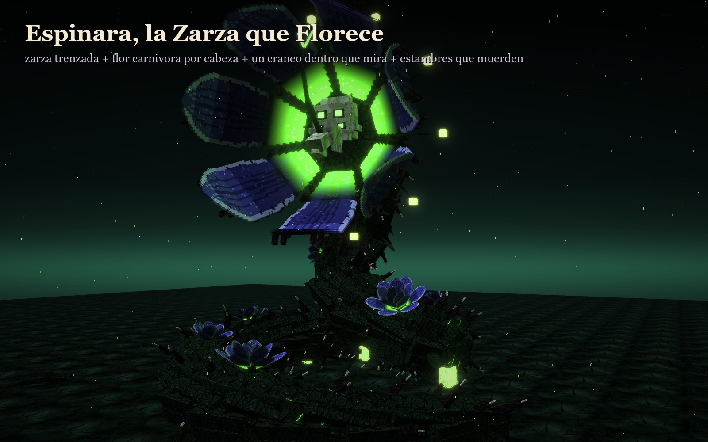
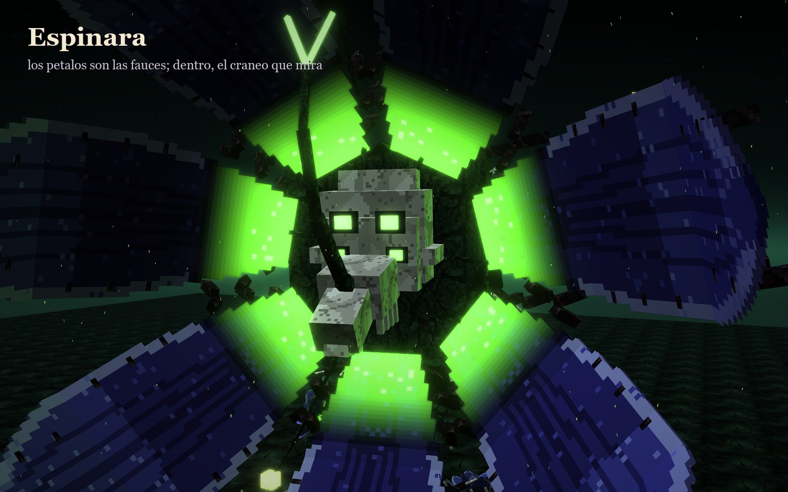
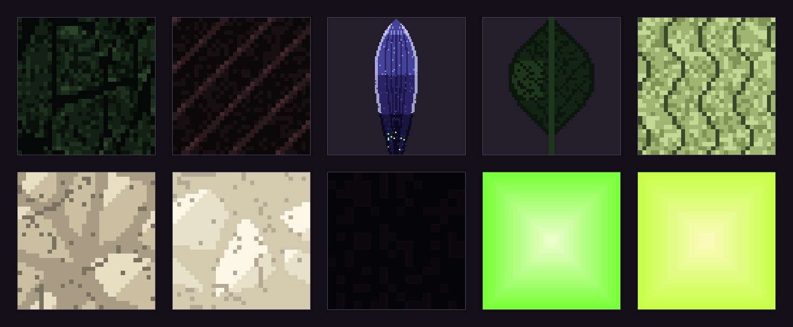

Espinara salió de la ficha del quinto jefe, el «Bestiario de las Quimeras» (12-10-2026). De las tres quimeras, fue la que más le gustó a Juan: la que representa la naturaleza. Las otras dos no se guardaron.
Una zarza trenzada que se enrosca como una sierpe y florece por la cabeza. La flor es su boca: los pétalos se abren como fauces con dientes de espina y dentro, en el néctar que arde verde, la mira el cráneo de una bestia de cuatro ojos.

En peleala flor se cierra y se abre; con los pétalos abiertos, el cráneo queda al aire.
La lámina es solo suya y sin rótulos: de izquierda a derecha y de arriba abajo, la corteza de zarza, la espina, el pétalo, la hoja, el farolillo, el hueso del cráneo, los dientes, las fauces, la savia y el polen.

La que más le gustó de las quimeras (12-10-2026). Desde el 13-10 sus fotos van sin letras y con el borde blanco: «a Espinara su diseño de ficha quítale las letras para que se vea más claro y pongámosle borde blanco también».
Bocetos: materiales/generadores/quimeras_modelo.py (espinara()) y quimeras_escenas.py.